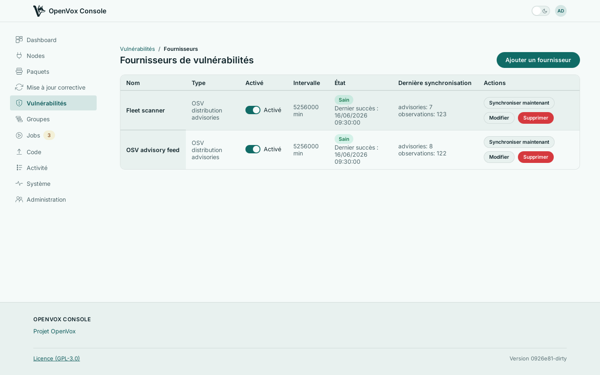

Utiliser
Suivre les vulnérabilités
Configurez des fournisseurs de vulnérabilités, lisez les constats du parc, et sachez ce que chaque fournisseur peut voir ou non.
La console indique quels Nodes sont touchés par quelles vulnérabilités connues, en fusionnant les données d'un ou plusieurs fournisseurs. Elle confronte les données de chaque fournisseur aux paquets que chaque Node remonte ; la remontée des paquets doit donc être activée sur les Nodes : voir Ajouter des Nodes.
Voir les constats nécessite vulnerabilities:read ; configurer les fournisseurs nécessite vulnerabilities:manage. Ni l'une ni l'autre n'est incluse dans nodes:read : les constats sont plus sensibles qu'un inventaire.
Choisir un fournisseur
| Fournisseur | Données issues de | Identifiants |
|---|---|---|
| OSV | la base de données publique OSV, ou votre propre miroir de celle-ci | aucun |
| Tenable | votre tenant Tenable | Clés d'API |
Autant de fournisseurs que vous voulez peuvent fonctionner en même temps, y compris deux fournisseurs OSV aux emplacements de données différents. Une vulnérabilité signalée par plusieurs d'entre eux n'apparaît qu'une fois, avec la gravité et la version corrigée propres à chaque fournisseur.
Rien ne sort de la console tant que vous n'avez pas activé de fournisseur.
Préparer les identifiants
Un fournisseur doté d'identifiants a besoin d'une clé pour les sceller dans la base de données. Générez-en une et indiquez-la dans CONSOLE_SECRETS_KEY_FILE :
openssl rand -base64 32 > secrets.key
chmod 600 secrets.key
Sans elle, OSV fonctionne, et un fournisseur nécessitant des identifiants est refusé avec une erreur qui nomme le paramètre.
Sauvegardez la clé avec vos sauvegardes de base de données, mais stockez-la à part. La perdre ne fait perdre aucun constat, mais tous les identifiants enregistrés deviennent illisibles, et les fournisseurs concernés échouent jusqu'à ce que leurs identifiants soient ressaisis sous une nouvelle clé.
Ajouter un fournisseur
- Ouvrez Vulnérabilités, puis Fournisseurs.
- Ajoutez un fournisseur du type voulu, et renseignez ses paramètres et ses éventuels identifiants. La console n'affiche plus jamais un identifiant enregistré ; lors d'une modification, laissez un champ d'identifiant vide pour conserver celui qui est enregistré.
- Activez-le.


Il se synchronise immédiatement, puis selon un calendrier, toutes les heures par défaut pour OSV. Les constats se rafraîchissent lors de la synchronisation d'un fournisseur, et non à chaque exécution Puppet.
Ce que télécharge OSV
OSV ne télécharge des données que pour les distributions présentes dans votre parc, en HTTPS depuis storage.googleapis.com par défaut. La première synchronisation d'une distribution télécharge son archive complète - environ 70 Mo pour Debian et 700 Mo pour Ubuntu - et les suivantes uniquement ce qui a changé.
Sites isolés du réseau
Pointez l'emplacement des données d'un fournisseur OSV vers un miroir interne du bucket OSV, organisé de la même façon pour chaque distribution : son all.zip, son modified_id.csv et un fichier JSON par enregistrement modifié. Un simple serveur web statique suffit, et copier le répertoire de chaque distribution suffit à l'alimenter :
gsutil -m rsync -r gs://osv-vulnerabilities/Debian ./Debian
Les noms de répertoire contiennent des espaces, comme Rocky Linux et Red Hat.
Tenable
Un fournisseur Tenable importe tous les constats ouverts, puis uniquement les changements. Chaque asset Tenable est associé à un Node en comparant ses noms au certname et au FQDN rapporté de chaque Node. Un asset qui ne correspond à aucun Node, ou à plusieurs, est ignoré et compté comme non associé ; un compteur qui grandit signifie généralement que Tenable voit d'autres noms que vos certnames.
Lire les constats
La page Vulnérabilités liste les constats du parc, des plus graves aux moins graves, avec le nombre de Nodes touchés par chacun. Par défaut, elle affiche les constats pour lesquels un correctif est disponible, c'est-à-dire ce que l'application de correctifs changerait ; réglez Correctif sur Tous pour inclure ceux sans correctif publié.
Un Node qu'aucun fournisseur activé n'a pu évaluer est affiché comme non évalué, avec la raison donnée par chaque fournisseur, et jamais comme sain :
| Raison | Signification |
|---|---|
| OS non pris en charge | OSV couvre Debian, Ubuntu, AlmaLinux, Rocky Linux et RHEL 7 à 10 |
| aucune donnée de paquet | le Node ne remonte aucun paquet ; activez la remontée pour lui |
| mise à jour de l'agent requise | les données de paquets du Node sont trop anciennes pour une correspondance fiable ; mettre à jour son agent de Node règle le problème à sa prochaine exécution Puppet |
| non vu par Tenable | aucun asset Tenable ne correspond au Node |
| pas encore synchronisé | le fournisseur n'a pas terminé de synchronisation |
Ce qu'il faut attendre d'OSV
- Sur Debian et Ubuntu, de nombreuses vulnérabilités que la distribution juge négligeables, ou qu'elle a décidé de ne pas corriger, apparaissent quand même, comme constats sans correctif publié. C'est pourquoi la liste s'ouvre sur « correctif disponible ».
- Les Nodes RHEL ne sont comparés qu'aux dépôts principaux. Les Nodes qui utilisent des dépôts de support étendu ou des dépôts complémentaires peuvent afficher des constats qui ne les concernent pas.
- AlmaLinux ne publie aucune gravité ; ses constats s'affichent donc comme Inconnu.
Les constats visant d'anciens noyaux et d'autres paquets supprimés depuis longtemps proviennent généralement de paquets supprimés sans purge, dont les fichiers de configuration subsistent. Purgez-les sur le Node avec apt purge '~c' ; les constats se ferment à la synchronisation suivante du fournisseur.